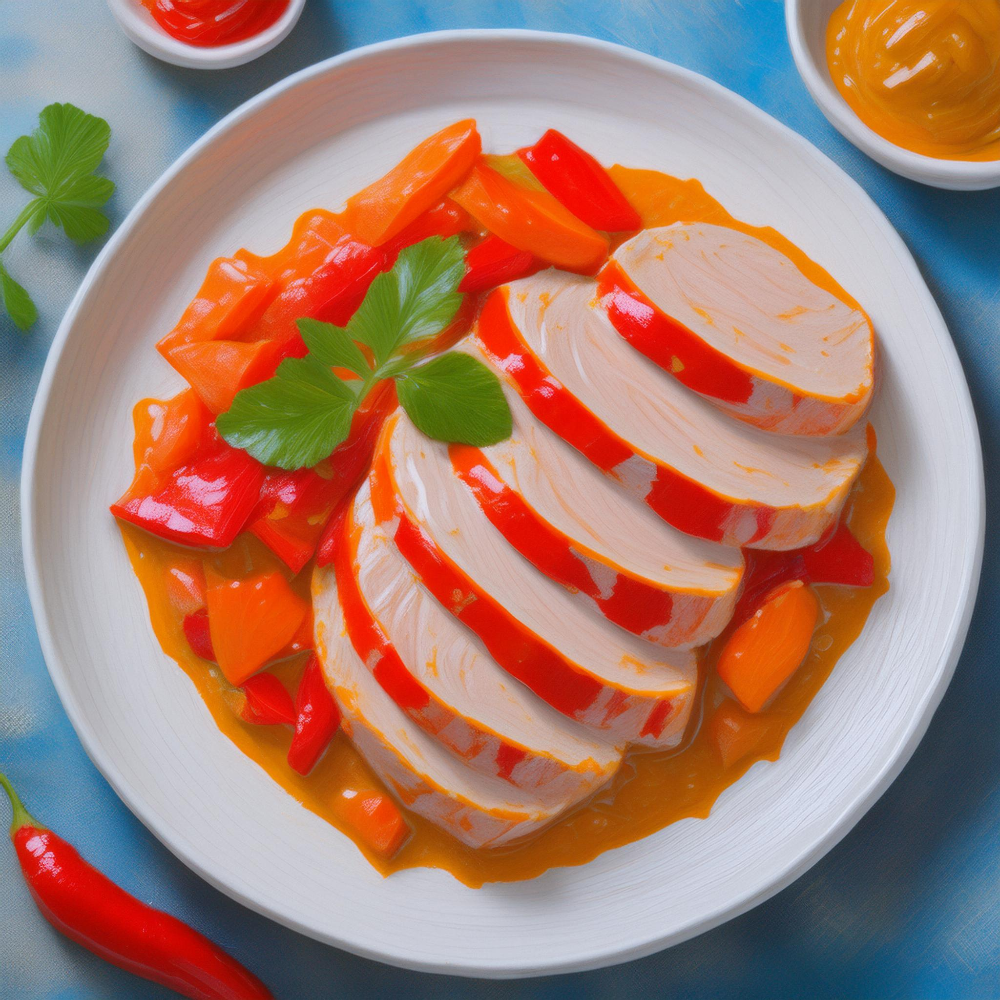

Paprika Schnitzel

Description
This is a simple recipe for Paprikaschnitzel. The recipe is calculated for 2 people and takes a total time of approximatelx 40 minutes.
Ingredients
- 2 Escalopes of Turkey ~300g
- 250g of Cream
- 1 Paprika
- 1 Onion
- Rapeseed Oil
- Salt, Pepper, hot and sweet Paprika Spice, Chili
- Broth
Steps
- Wash and slice the turkey fillets and season with salt, pepper, chilli and paprika.
- Dice the onion and bell pepper.
- Brown the meat, onion and pepper in a frying pan. Add the broth and simmer for 10-15 minutes with the lid on.
- Add the cream and simmer for another 5 minutes.